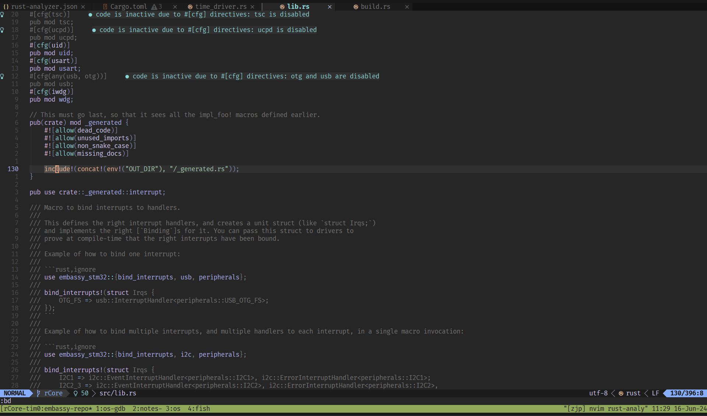

子模块 embassy 是修改过的 embassy fork。
本文主要记录如何分析 embassy 仓库代码，而不是介绍具体的分析结果。
关于 embassy 分析结果，见我的
embassy:开头的训练营笔记文章。
rust-toolchain.toml
rust-toolchain.toml 和 rust-toolchain-nightly.toml 是用来设置和固定 Rust 工具链版本号的。
有两个文件是因为 embassy 分别在 stable Rust 和 nightly Rust 上提供支持。
[toolchain]
channel = "1.79"
components = [ "rust-src", "rustfmt", "llvm-tools" ]
targets = [
"thumbv7em-none-eabi",
"thumbv7m-none-eabi",
"thumbv6m-none-eabi",
"thumbv7em-none-eabihf",
"thumbv8m.main-none-eabihf",
"riscv32imac-unknown-none-elf",
"wasm32-unknown-unknown",
]
对本地分析源码，这基本没什么用，因为它主要用来进行 CI 测试。
我通常都会把这些工具链配置删除，当需要某个编译目标时（比如 thumbv7em-none-eabi），才通过
rustup target add thumbv7em-none-eabi 添加。
对于新手，如果你觉得手动设置这些很麻烦，可以不用动它，但代价是它会给你下载这整套工具链，需要安装时间和存储空间。
.vscode/settings.json
对于 vscode 用户，首先查看 embassy 根目录的 .vscode/settings.json 配置文件，里面主要是用来配置 rust-analyzer (RA)。
根据我的经验，embassy 仓库的项目结构已经属于中大型规模，如果你对 Rust 的 cargo 组织方式不够熟悉，那么很难进行随心所欲地变动和配置。
我不会在这深入分析 embassy 的项目结构。但项目结构会决定你怎么配置 RA，比如说默认开启的
-
"rust-analyzer.cargo.target": "thumbv7em-none-eabi"：它要求你的工具链安装了thumbv7em-none-eabi目标，它会在每个被分析到的库上，给 cargo 传递--target thumbv7em-none-eabi来让 RA 获取 rustc 发出的诊断。这对于代码分析不是必要的，至少在我分析某些库的时候 （executor、 time），我不需要指定它。但它可能会影响内联汇编，因为汇编语法与编译目标相关（我没有尝试分析那部分，这只是猜测）。 -
"rust-analyzer.linkedProjects": [...]：这实质上是手动指定一些项目让 RA 分析；它有多种使用方式，最常用的一种是指向子目录中的Cargo.toml，这是因为Cargo.toml代表所在的目录是一个 package。rust-analyzer.linkedProjects (default: [])
Disable project auto-discovery in favor of explicitly specified set of projects.
Elements must be paths pointing to Cargo.toml, rust-project.json, .rs files (which will be treated as standalone files) or JSON objects in rust-project.json format.
src: RA user manual
-
"rust-analyzer.cargo.features": [...]：这与你分析的项目有关，由于 embassy 默认设置embassy-stm32/Cargo.toml作为分析，embassy 帮你填了embassy-stm32/Cargo.toml内的一些 features；如果你修改linkedProjects到别的库，那么填那个库的 features。"rust-analyzer.cargo.features": [ // Comment out these features when working on the examples. Most example crates do not have any cargo features. "stm32f446re", "time-driver-any", "unstable-pac", "exti", "rt", ],
neovim
vscode 用户可以不必阅读这一节，你们只需要上面的步骤，然后右键选择一下就能看到宏展开。
但这里的介绍流程和细节并不会因为编辑器/开发环境的不同而完全割裂。
我并不是 vscode 用户，而是长期通过终端使用 neovim 编码。
但我也不会在这从头讲如何基于 neovim 搭建开发环境；如果你想知道我的配置，见 此处。
neovim 中 Rust LSP 插件主要是 rustaceanvim，一些要点：
- 项目布局：
- 方式一：你可以使用上面 vscode 那样的 linkedProjects 配置，那么想办法让插件读取 RA 的配置文件就好
- 方式二：由于 embassy 根目录不是 workspace 布局，所以我通常从终端进入某个库开始对它分析，把
rust-analyzer.json放置在那个库的根目录
- RA 配置：
"rust-analyzer.cargo.allFeatures": false：因为 embassy 是重度条件编译和 feature 控制的，它的库不需要 allFeatures- 其实 allFeatures 已经被弃用，这里只是防止插件给你设置（我得到 教训）
"rust-analyzer.cargo.features": [...]：（可选的）填写这个库所需的 features
- embassy 同时也是重度使用宏的，尤其一些结合 build.rs +
include!进行编译时生成和展开源码的地方，更需要上面影响条件编译的选项配置正确- 在想要展开的宏上，调用
:RustLsp expandMacro命令展开宏 - 如果你想要通过
cargo expand，那么需要通过-F传递 features
- 在想要展开的宏上，调用
条件编译和宏展开示例
综合示例：在 embassy-stm32/src/lib.rs 中，有一个 include!(concat!(env!("OUT_DIR"), "/_generated.rs"))，如果你没有传递 stm32 开头的
feature，那么 RA 无法展开和分析其内部的代码。所以你需要类似于下面的配置
{
"rust-analyzer.cargo.features": ["time-driver-tim1", "stm32c011d6"]
}
才直接展开这个 include! 宏，得到 _generated 模块的实际内容1：
如果通过 cargo expand，示例为 cargo expand _generated -F stm32c011d6 | bat -l rust 来展开 _generated 模块

并获得只对 time_driver_tim1 条件编译的分析结果：
#![allow(unused)] fn main() { // embassy-stm32/src/time_driver.rs // 其中 peripherals 模块由 _generated.rs 编译时生成，它在源码中不存在 40 #[cfg(time_driver_tim1)] 41 type T = peripherals::TIM1; 42 #[cfg(time_driver_tim2)] ● code is inactive due to #[cfg] directives: time_driver_tim2 is disabled 43 type T = peripherals::TIM2; 44 #[cfg(time_driver_tim3)] ● code is inactive due to #[cfg] directives: time_driver_tim3 is disabled 45 type T = peripherals::TIM3; }
这里有一个有趣的细节：cargo 的 time-driver-tim1 feature 实际上只影响 #[cfg(feature = "time-driver-tim1")]
来进行条件编译，但我们并没有指定额外的 cfgs（比如 RA 配置 "rust-analyzer.cargo.cfgs": ["time_driver_tim1"]），那么
RA 是如何识别到 #[cfg(time_driver_tim1)] type T = peripherals::TIM1; 被启用呢？
答案在 build.rs 脚本里面，它在 Rust 编译前期编译和运行，主要帮助 package 做一些配置工作或者生成一些产物（代码文件/构建 C 库/等）。 它有一个重要的使用方式，是通过环境变量读取或者设置一些东西。
具体来说，在 embassy-stm32 的 build.rs 里会检查用户有没有开启 time_driver 开头的 feature，然后去除这个前缀，保留后面的
tim1，通过向标准输出打印 cargo:rustc-cfg=time_driver_tim1 达到开启 time_driver_tim1 这个 cfg flag 的目的。
这是 cargo 一个巧妙的设计：使用者可以只需要指定 time-driver-tim1 feature，而无需再指定 time_driver_tim1 cfg flag ——
这相当于向使用者隐藏了 cfg flag（使用者可以对它毫不知情），但同时给予库的编写者编写更复杂的条件编译的余地。虽然使用者依然可以设置
cfg flag（如果他们知道名称的话），但在实际情况中，这个设计减少了版本不兼容的风险，因为库会告知和鼓励使用 features，而不是 cfg
flags。从这个角度看，单个 feature 可以视为多个 cfg flags 的集合（但 embassy-stm32 似乎并没有完全利用这一点，它只关联了一个 cfg flag）。
#![allow(unused)] fn main() { // src: https://github.com/embassy-rs/embassy/blob/86c48dde4192cabcad22faa10cabb4dc5f035c0a/embassy-stm32/build.rs#L182 // Handle time-driver-XXXX features. let time_driver = match env::vars() .map(|(a, _)| a) .filter(|x| x.starts_with("CARGO_FEATURE_TIME_DRIVER_")) .get_one() { Ok(x) => Some( x.strip_prefix("CARGO_FEATURE_TIME_DRIVER_") .unwrap() .to_ascii_lowercase(), ), Err(GetOneError::None) => None, Err(GetOneError::Multiple) => panic!("Multiple stm32xx Cargo features enabled"), }; let time_driver_singleton = match time_driver.as_ref().map(|x| x.as_ref()) { None => "", Some("tim1") => "TIM1", ... _ => panic!("unknown time_driver {:?}", time_driver), }; if !time_driver_singleton.is_empty() { cfgs.enable(format!("time_driver_{}", time_driver_singleton.to_lowercase())); } // src: https://github.com/embassy-rs/embassy/blob/86c48dde4192cabcad22faa10cabb4dc5f035c0a/embassy-stm32/build_common.rs#L36-L40 impl CfgSet { /// Enable a config, which can then be used in `#[cfg(...)]` for conditional compilation. /// /// All configs that can potentially be enabled should be unconditionally declared using /// [`Self::declare()`]. pub fn enable(&mut self, cfg: impl AsRef<str>) { if self.enabled.insert(cfg.as_ref().to_owned()) { println!("cargo:rustc-cfg={}", cfg.as_ref()); } } } }
features
首先要明确的是，当我们在 Rust 中谈论 feature，需要确定上下文：
- nightly/unstable feature 通常指 nightly Rust 中才可用的、实验性的功能，你可以在 unstable book
查阅到这个列表。它可以划分为 language feature 和 library feature 两部分，但都使用
#![feature(...)]语法启用功能。- language feature：由 lang team 负责来设计 Rust 语言（语法、语义、规范），比如
#![feature(lang_items)] - library feature：由 library team 负责，在标准库（含 core lib）添加新的 APIs，比如
#![feature(waker_getters)]
- language feature：由 lang team 负责来设计 Rust 语言（语法、语义、规范），比如
- 在使用一个库的时候，feature 通常指这个 crate （库或者可执行程序） 在其 Cargo.toml 文件中定义的内容，用于条件编译或者指定可选依赖
- features 的定义具有两部分来源：
[features]中定义的键：因此一个 feature 可以是多个其他 feature 的集合- 被指定为
optional = true的依赖
- 库的编写者在源码中使用
#[cfg(feature = "...")]将代码进行条件编译控制，而库的使用者在 Cargo.toml 中，在这个依赖声明时指定 features - 示例：库 a 包含
#[cfg(feature = "gated")] pub fn f() {}函数，使用者想使用a::f()，必须在配置文件中启用（比如直接写[dependencies] a = { version = "...", features = ["gated"] }]或者其他间接方式） - 所以库的 features 改动应该视为公共 API 的一部分，需要进行版本兼容性的考虑 (SemVer)
- 在 embassy 中，存在一些
_开头的 features，这是一种社区做法，用于表明这些 features 不应被使用者直接使用，从而作为库内部的细节而不遵循版本语义
- 在 embassy 中，存在一些
- features 的定义具有两部分来源：
这里讨论库的 features（也指 Cargo features）。
可以说 features 是 cfg 在 Cargo 的一个特殊化：
- features 被设计为累加式的，这意味着库应该尽量将默认开启的 features 降到最低
- cargo 有一系列 features 的细节设计：不限于
check-cfg 解决的问题很直观：检查 cfg 选项的 key 和 value 是否有效，即如果源码中写了 cfg(key) 或 cfg(key = value)，那么 key 和 value 应该被定义。
比如当你过去直接写 #[cfg(aaa)]，Rust 不会对这个 aaa 选项名做任何检查，显然这会带来风险；现在（目前在 nightly Rust
中），你会碰到来自 rustc 友好的提示（也会出现在 IDE 中），告知你当前有效的名称和处理它的方式：
#![allow(unused)] fn main() { #[cfg(aaa)] // 自定义的 cfg flag fn f() {} warning: unexpected `cfg` condition name: `aaa` --> src/bin/borrow.rs:38:7 | 38 | #[cfg(aaa)] | ^^^ | = help: expected names are: `clippy`, `debug_assertions`, `doc`, `docsrs`, `doctest`, `feature`, `miri`, `overflow_checks`, `panic`, `proc_macro`, `relocation_model`, `r ustfmt`, `sanitize`, `sanitizer_cfi_generalize_pointers`, `sanitizer_cfi_normalize_integers`, `target_abi`, `target_arch`, `target_endian`, `target_env`, `target_family`, ` target_feature`, `target_has_atomic`, `target_has_atomic_equal_alignment`, `target_has_atomic_load_store`, `target_os`, `target_pointer_width`, `target_thread_local`, `targ et_vendor`, `test`, `ub_checks`, `unix`, and `windows` = help: consider using a Cargo feature instead = help: or consider adding in `Cargo.toml` the `check-cfg` lint config for the lint: [lints.rust] unexpected_cfgs = { level = "warn", check-cfg = ['cfg(aaa)'] } = help: or consider adding `println!("cargo::rustc-check-cfg=cfg(aaa)");` to the top of the `build.rs` = note: see <https://doc.rust-lang.org/nightly/rustc/check-cfg/cargo-specifics.html> for more information about checking conditional configuration = note: `#[warn(unexpected_cfgs)]` on by default }
查找这个选项定义的地方有：
- rustc's list of "well known" cfgs (generally first party compilation toolchains)：比如上面 target 开头和相关的名称
- cargo's list of "well known" cfgs：比如 clippy、doc、docsrs、miri
[features]：在 Cargo.toml 中定义cargo::rustc-check-cfg：通过 build.rs 传递编译时的环境变量- Passing
--check-cfgthroughRUSTFLAGS
如果你确认想忽略这个检查 cfg 选项的噪音，则采用以下一种方式：
- 模块内使用
#![allow(unexpected_cfgs)]（貌似暂不能识别 item 上的#[allow(unexpected_cfgs)]） - 在 Cargo.toml 中
[lints.rust]定义unexpected_cfgs，help 信息已经给了示例
目前这是一个夜间功能，不过预计在 7 月 Rust 1.80 上稳定。（见 cargo 1.80 开发报告）
embassy 在 5 月合并了添加 check-cfg 功能的 PR#3005，它是一个很好的示例，尤其值得学习在 build.rs 中把
cargo::rustc-check-cfg （定义选项） 和 cargo::rustc-cfg （开启选项）结合起来使用的技巧。